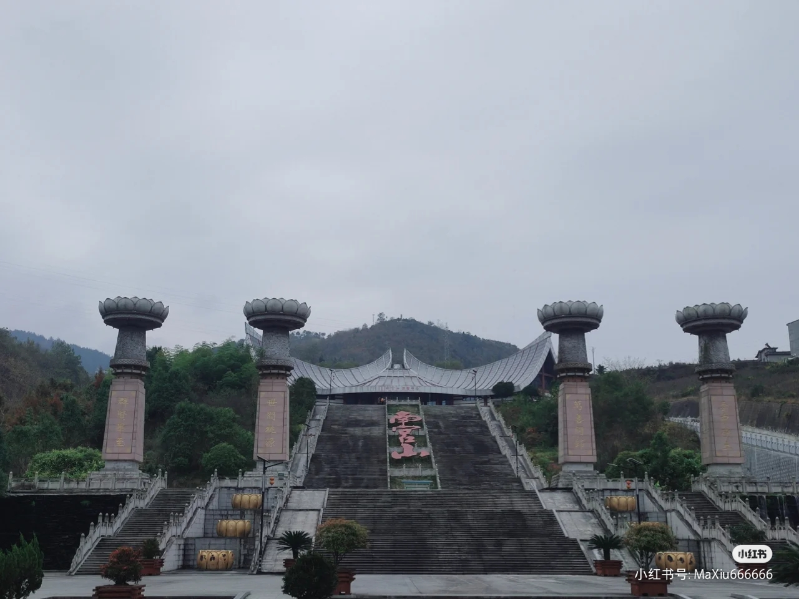

一，旅游风景区
瀛湖风景区
主要景点有特大斜拉桥、电站枢纽工程、天柱山、白云寺、玉兴岛、关平岛、牛郎织女石、汉代古墓等。瀛湖是省级风景区之一，位于安康市区西南18公里处的的天柱山脚下，是安康水电站建成后形成的西北地区最大的淡水人工湖，周长540公里，水域面积77.5平方公里。
雄踞在火石岩峡谷中的电站大坝，坝顶总长541.5米，坝高128米，故有“陕西第一坝”的美称。每当泄洪时，飞瀑高悬，雷霆万钧，蔚为壮观。坝侧是久负盛名的佛教胜地天柱山白云寺，坝下不远处是一座我国自行设计并建造的特大钢构斜拉桥，具有世界先进水平。
瀛湖广阔秀丽，波光潋滟，湖中岛屿棋布，相映成趣。瀛湖水产丰富，出产价值较高的银鱼。此外，湖畔产茶，“安康银峰”毛尖茶茶香味真，颇有声名。湖岸还盛产柑橘，年产量在百万吨以上。
凤堰古梯田
凤堰古梯田为全国重点文物保护单位、国家水利风景区、国家4A旅游景区、国家森林公园、中国最美田园。 景区位于汉阴县漩涡镇，属于灌区型水利风景区，连片共1.2万余亩，距今逾250年，景区面积38.78平方公里，是秦巴山区考古发现的面积 最大、保存最完整的清代梯田。 2010年凤堰古梯田被评为“陕西省第三次全国文物普查十大新发现”，2013年被省水利厅命名为省级水利风景区，2014年被农业部命名为“中国美丽田园”，林业部将其纳入凤凰山国家森林公园，现已建成全国首个移民生态博物馆。2020年，汉阴县漩涡镇凤堰古梯田被正式认定为国家4A级旅游景区
中坝大峡谷
大峡谷七公里，整个峡谷为一线天，最宽处仅有十米，千曲百折，曲径如走蛇。两侧岩壁层层叠叠，垂直高度千米，森林密布，许多地方抬头不见天。有壁立千韧的舍身崖，高耸入云千余米；有栩栩如生的鹞子岩；有刀削剑劈的鹰嘴峰，还有的腰峡等景点 。 小峡谷宽不盈米，峡内地势高峻，水流湍急，山石奇趣，奇峰秀瀑，危岩多峭，在一公里内河流几次瀑跌。牛心峡别有洞天。有形状似兽、似物，姿态万千。有的似龟、有的似兔、有的似瓜，在峡谷里横卧有不少大小不等、重重叠叠、妙趣天成的玩石，如牛心石、连心石、仙人石、等都是美妙绝伦、惟妙惟肖。
燕翔洞生态景区
汉江燕翔洞生态旅游景区位于石泉境内，占地80平方公里，北依秦岭，南接巴山。景区依托汉江，将汉江三峡、熨斗古镇、富水河、燕翔洞天、灵雀山及肖家古寨、狮岭风光、长岭峡谷等十几个风光旖逦、生态完美的主题景区，近150个景点珠玉相缀巧妙搭配，凸显出秦巴腹地、汉江两岸特有的原生态美，并与悠久的汉水文化相结合，形成了融山、水、岸、洞自然景观及古镇、寺院、宗祠、戏园等人文景观为一体，具有鲜明特色的生态自然景区。
南宫山国家森林公园
南宫山国家森林公园位于陕西安康市岚皋县东部，为国家AAAA级风景区。经营面积7648公顷。由二郎坪、金顶、火山石、高山栎和莲花寨五大景区组成。公园以高僧弘一大师真身、古生代火山多次喷发的流迹、第四纪冰川遗迹和原始次生森林闻名遐迩，已成为陕、川、鄂、渝毗邻地区游览观光、休闲度假、消夏避暑的旅游胜地。北宋靖康二年（公元1126），山上始建道观，至清代逐渐演变成佛教胜地，清嘉庆二十五年（公元1820）七月初二，高僧弘一大师在金顶莲花盆中圆寂，真身百年不腐，为南宫山增添了浓厚的神秘色彩。
飞渡峡-黄安坝
飞渡峡景区位于大巴山北麓、陕西最南端安康市镇坪县曙坪镇境内，距离县城40公里。景区与重庆市城口县、陕西省平利县接壤，地理区位独特。 景区属北亚热带山地湿润气候区，垂直差异大。高山区和低山区的季度转换相差70天以上，四季分明，气候温和，年平均气温为12.1℃，年平均无霜期250天，具有“冬无严寒，夏无酷暑”的显著特点。因其优越的地理位置、自然条件以及覆盖率达98%的森林资源，给景区内珍稀的动植物生长繁衍提供了良好的生态环境，森林覆盖率达98%以上，可称得上是珍稀动植物的家园，是珍稀动植物物种繁殖基地和种子基因库。其中国家一级保护植物有珙桐，光叶珙桐，红豆杉，银杏和独叶草，南方红豆杉等，曾被世界公认已灭绝的侏罗纪植物崖柏在也景区内发现。属国家重点保护动物多达31种，其中一级保护动物有云豹、金钱豹、梅花鹿、金丝猴、金雕等。 沿着飞渡河蜿蜒前行，便置身于一个绿树、红叶、怪石、飞瀑、深潭组成的山水梦幻之境。秦巴山水柔和润泽，一反秦岭山水的生涩，成为陕西最具特色的山水旅游资源。 飞渡旅游资源丰富、旅游要素完整，犹以奇树、怪石、飞瀑、深潭、草甸“飞渡五绝”享有盛誉。
天书峡
天书峡位于陕西省南端，大巴山主峰之一化龙山西北坡平利县城东南部八仙镇与正阳乡之间，为国家AAAA级旅游景区。该峡谷源出化龙山，峡谷长12.8公里，开发面积25平方公里。天书峡位于陕西省南端，平利县东南八仙镇与正阳乡之间，大巴山主峰化龙山西北坡谷地。峡谷长12.8公里，森林覆盖率达97%，保存着丰富的动植物资源，聚集了原始森林、湿地、草甸、奇石等多类型自然景观资源，被命为"中国西北地区最大的生物基因库主体"，这里生长着200多种国家一、二类珍稀动植物，100多种名贵药材
鬼谷岭国家森林公园
鬼谷岭国家森林公园位于陕西省安康市 石泉县城关镇境内，距石泉县县城30公里，是石泉境内最高山峰，也是陕西著名的道教名山。鬼谷岭又名云雾山，由鬼谷岭、龙洞沟景区、大溪沟景区3个景区组成，雄奇险峻，主峰被五条苍劲山脉拱托，喻称“五龙捧圣”。山上峰峦叠嶂，谷间碧水幽潭树木，古藤攀缠。这里四季云雾缭绕，林海茫茫，原始森林保存完好，自然风景奇绝幽美。
香溪洞
香溪洞，国家AAA级旅游景区、，位于城南3公里新城办事处境内。东起陈家沟西环山梁。西至西坡根山溪，南到任家沟北环山半坡茶园，北至头天门牌坊北环沟中，总面积6.6万平方米，香溪公路专线直达公园。据园内碑文载始建唐代，明万历庚子年（1600）。清雍正九年（1731）两度重修，昔称“古洞仙踪”。系安康“八景”之最。
香溪洞景区现有50多处景点和文物, 主要景点有香溪八洞、纯阳楼、玉皇阁、天梯、驾云桥、镜儿湖、凌霄亭、古钟亭、望江楼、兴贤塔、古战场、三清殿等，素有“古洞仙踪”之称。香溪洞、药王洞、三茅洞、龙王洞、文昌洞、八仙洞、慈航洞、祖师洞并称“香溪八洞”，洞中石雕泥塑道教神像多尊，神采奕奕，栩栩如生。自明朝以来，香溪洞就成为陕南道教最大的活动中心。香溪洞景区四面群山环抱，翠屏相列， 森林覆盖率达90%以上， 稀有珍贵古树木12种，有被称为“活化石”的水杉和银杏，还有20余种野生动物和鸟类。百亩茶园，万亩松林，景区四季常青，风景如画。
香溪洞既有天然之幽美，更有人文之粉饰。 欣蓬盛世， 这一千年胜迹， 频增新颜，点染江山，大放异彩，是镶嵌在绿色安康之南山秀岭上的一颗璀璨的明珠， 是广大游客陶情冶性之“洞天福地”。
双龙溶洞
安康双龙国际生态旅游度假区，以解构龙之传奇，体验龙之神韵，追寻中华龙根为主题的国家级旅游景区。该景区位于安康市汉滨区双龙镇，总规划面积约12平方公里，景区距安康城区56公里。整个景区以5.6公里旅游环线，贯串了龙潭峡、祥龙谷、游龙瀑布、青龙寨、玉龙宫等主要旅游景观景点，各景观景点可入宫探源，观水探脉、登山过峡，穿从越林，品茶沐汤。看龙之景观，听龙的故事，赏龙之演艺：是一处融合文化体验、观兴旅游、生态养生、休闲度假为一体的复合型旅游度假风水福地。是现代人群追求大自然、返璞归真“天人合一”的仙境
二，古镇风景
蜀河古镇
蜀河镇镇位于安康旬市太极山城以东53公里处，北倚巍巍秦岭，南傍依巴山。挟汉江而携蜀河， 东与仙河镇、冷水镇接壤，南与白河市毗邻，西与棕溪镇、关口镇交界；北与双河镇相接。蜀河为古蜀国所在地，汉时置县，中兴于明代，繁华于清朝中末，续写的是汉江黄金水道上的传奇。古蜀河便逐渐发展成为汉江上游的商业重镇，有“小汉口”、“汉江小都会”的美誉。漫步在蜀河古镇上，目之所及全是明清的老房子，古香古色的，好像回到了小时候，整个时间仿佛慢了下来，徜徉其中，让人感到如此的自然和放松。
双河口古镇
双河口古镇，因两条河在此交汇而取名，东边是梨树河，西边是斑竹园河，两河汇合后往下就是清泥河了。 这里山峦起伏，巍峨葱绿；流水婉延，清澈见底，好一个天然大氧吧！是镶嵌在汉阴北部山区的一颗明珠。古镇街道上的人家都民风淳朴，非常好客，和气交谈，招呼让座，给人留下良好的印象。街道上古香古色的建筑， 青砖黑瓦的老街，小桥人家的韵味，来到双河口古镇，像是从现代穿越到古代。
桥儿沟
陕西境内汉水两岸海拔最低的一座城镇——白河，是汉水南岸一座古色奇秀的山城。 她街之古幽、桥之奇巧、泉之秀澈大半集于县城西北部的桥儿沟古街。这条不到700米的古街，有石阶456步。别小看这曲曲折折，高低不平的一里多长的小街，其实是旧日汉水码头一段繁华的缩影，是明清时白河先民们生活的一段记忆。桥儿沟的古桥也值得一看，古桥奇巧，古泉秀澈。桥儿沟的街巷、城门、古建、石刻和人们在坚守、在蓄积，在默默坚守的静幽里延续着一方历史人文，在闲适愉悦的蓄积中等待涅槃。
熨斗古镇
熨斗古镇距今已有上千年的历史，是川楚古道上的一座驿站古镇。熨斗古镇建在喀斯特地貌的熔岩之上，现存古街多是明清时期建筑， 尤以“让出三尺地，多占一份天”的吊脚楼最为有特色。古镇依山傍水而建，富水河紧紧环抱，虽经千百年的时代变迁，仍然保留着昔日恬淡、古朴、优雅的风貌，颇具“小桥、流水、人家”的诗情画意。
后柳古镇
后柳古镇，素有汉江水码头之称。南下20公里至燕子洞景区，往西10公里可至中坝大峡谷景区。 镇内文物古迹众多，人文资源荟萃，文化底蕴深厚，旅游资源丰富。看小镇的临江处，是小镇古建筑的集中区。最东角处，有几间土墙青瓦民居，土旧的程度少说也有百年之久了。其间有一棵大树从房屋中间昂然而起，直出屋顶，伞盖全房，被人称为“屋包树”。屋包树的旁边便是一条曲折的石阶小径，弯弯折折向上，形成一条小街。
流水古镇

 流水古镇位于安康市汉滨区流水镇，镇内交通发达，地处汉江中游，瀛湖上游，被誉为被“中国十大最美小镇”。历史上曾是汉江“黄金水道”的重要码头，是南入巴蜀、西行长安的交通要道。因流水镇地处瀛湖中心位置，被誉为“汉水明珠”， 去过这里游玩的人说“有江南水乡之感”。澄净的湖水，让这个深处西北的古镇有了几分江南水乡的味道， 但广袤的天地与粗犷的山峦，让这里又有别于温婉的江南。
流水古镇位于安康市汉滨区流水镇，镇内交通发达，地处汉江中游，瀛湖上游，被誉为被“中国十大最美小镇”。历史上曾是汉江“黄金水道”的重要码头，是南入巴蜀、西行长安的交通要道。因流水镇地处瀛湖中心位置，被誉为“汉水明珠”， 去过这里游玩的人说“有江南水乡之感”。澄净的湖水，让这个深处西北的古镇有了几分江南水乡的味道， 但广袤的天地与粗犷的山峦，让这里又有别于温婉的江南。
石泉古镇

 石泉古县城坐落于汉江北岸石质高地，东临红河（红花沟）、南依汉江、西接饶峰河、北枕珍珠河，呈现出 “秦巴拱卫、四水绕城”的壮丽景象。汉江石泉古城虽历经千年，但依然留存着明清时期的建筑格局。现在的古城地处城市中心，明明充满烟火气，却又能在闹处取静，守着繁荣都市的一线天，成为文青眼里，最具复古情怀的地方。古街的白天是宁静闲适的，没有叫卖声， 没有口若悬河的推销声，也不像当今商海中拼搏的人们那样匆忙紧张，此刻还真有一种不知何年何夕的感觉。
石泉古县城坐落于汉江北岸石质高地，东临红河（红花沟）、南依汉江、西接饶峰河、北枕珍珠河，呈现出 “秦巴拱卫、四水绕城”的壮丽景象。汉江石泉古城虽历经千年，但依然留存着明清时期的建筑格局。现在的古城地处城市中心，明明充满烟火气，却又能在闹处取静，守着繁荣都市的一线天，成为文青眼里，最具复古情怀的地方。古街的白天是宁静闲适的，没有叫卖声， 没有口若悬河的推销声，也不像当今商海中拼搏的人们那样匆忙紧张，此刻还真有一种不知何年何夕的感觉。
焕古茶镇
 焕古茶镇是紫阳历代名茶的生产地，早在唐代其所产茶叶就被作为贡茶为宫廷享用。这里茶园景色别致优美， 游客在这里采茶、品茶、卖茶的同时，可以尽享这份宁静和自然。焕古茶是紫阳历代名茶的生产地，“紫邑宦镇”毛尖是唐代宫庭茶的历史品牌，是紫阳乃至陕南茶文化的发源地，在这里喝茶品茗，享受一份惬意的生活。
了解更多
焕古茶镇是紫阳历代名茶的生产地，早在唐代其所产茶叶就被作为贡茶为宫廷享用。这里茶园景色别致优美， 游客在这里采茶、品茶、卖茶的同时，可以尽享这份宁静和自然。焕古茶是紫阳历代名茶的生产地，“紫邑宦镇”毛尖是唐代宫庭茶的历史品牌，是紫阳乃至陕南茶文化的发源地，在这里喝茶品茗，享受一份惬意的生活。
了解更多